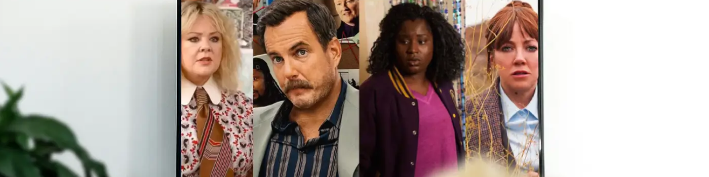

2025 年 Netflix 上最值得觀看的 20 部喜劇
如果你正在尋找一部值得一看的喜劇，那你來對地方了!我們精心挑選了20部風格各異的喜劇，包括溫馨的家庭喜劇、古怪的黑色幽默、甜蜜的浪漫喜劇、活潑的校園喜劇，以及創意十足的動畫喜劇。
無論你喜歡哪種類型的Netflix喜劇，這些電影都能讓你放鬆身心，享受完美的休閒時光。快來拿點爆米花，打開電視，準備迎接這個終極電影之夜吧!
1. 諾納斯(2025)
母親的去世讓喬(文斯·沃恩飾)悲痛欲絕，不知所措。在妻子的鼓勵下，他決定開一家意大利餐廳來紀念母親。然而，為了重拾母親記憶中的溫暖，他聘請了母親以前的理髮師、修女和甜點師來經營餐廳。雖然他們並非專業的團隊，但母親的

來源：今日秀
2. 老爸老媽(2023)
三位中年父親——傑克(比爾·伯爾飾)、弗蘭克(鮑比·坎納瓦爾飾)和達倫(博基姆·伍德拜因飾)——
《老爸爸》幽默地突出了傳統和現代
3. 我們是米勒一家(2013)
珍妮弗·安妮斯頓自《老友記》以來一直在探索各種喜劇角色，而這部與傑森·蘇戴奇斯聯袂出演的電影，則呈現了一個充滿荒誕與幽默的故事。電影講述了一個小毒販(蘇戴奇斯飾)為了保護自己的生意，僱傭了一個
在這段荒誕的公路之旅中，這些陌生人逐漸建立起如同家人般的情誼。影片充滿了出人意料的反轉和爆笑橋段，在荒誕與感人之間取得了完美的平衡。
4.《小鬼當家》(1990)
聖誕夜，八歲的搗蛋鬼凱文(
5.《天生一對》(1998)
《天生一對》也是一部聚焦兒童角色的家庭喜劇電影。林賽·羅韓一人分飾兩角，飾演一對性格迥異的
影片巧妙地將家庭、成長、愛情等元素融合在一起，讓觀眾在歡笑的同時，感受到親情的力量。

6.《博物館奇妙夜》(2006)
你有沒有幻想過
這部充滿幻想和笑聲的家庭喜劇將帶你踏上一場前所未有的夜間冒險。
7.《別抬頭》(2021)
這部電影充滿了諷刺、幽默和社會批判，以尖銳的諷刺方式將荒誕與現實融合，提高了人們對社會、政治和環境問題的認識。
兩位天文學家凱特(珍妮弗·勞倫斯 飾)和蘭德爾(萊昂納多·迪卡普里奧 飾)在觀測過程中發現了一顆巨大的彗星。彗星的軌跡表明它將與地球相撞，造成

8.《麻煩》(2024)
一位離異的電子產品銷售員意外目睹了一場暴力入室搶劫，卻因此蒙冤
9.《觸不可及》(2011)
《觸不可及》(2011)是一部根據
影片中，富豪菲利普(弗朗索瓦·克魯塞飾)在一次滑翔傘事故後腰部以下癱瘓，需要一位貼身護工。在眾多優秀的申請者中，他選中了剛出獄的黑人青年德里斯(奧馬爾·希飾)。
這個決定意外地讓兩人的傷痛得以

10. 復仇 (2022)
面對
《復仇》是一部充滿幽默和反思的電影。影片通過一系列神秘事件和不斷的反轉，讓觀眾對故事的結局充滿猜測。
11. 烏龍小姐 (2020)
蒂姆·莫里斯(大衛·斯佩德飾)與兩位名為米西的女子相親——一位優雅精緻(莫莉·西姆斯飾)，另一位則狂野古怪(勞倫·拉普庫斯飾)。在一次公司休假期間，蒂姆意外邀請了
《烏龍小姐》將喜劇與愛情巧妙融合，帶來輕松愉悅的觀影體驗。故事情節既搞笑又甜蜜，是一部輕松愉悅的浪漫喜劇，非常適合輕松愉快地觀看。
12.隨波逐流(2011)
《隨波逐流》是一部輕松浪漫的喜劇，非常適合尋求輕松愉悅娛樂的觀眾。影片中，珍妮弗·安妮斯頓飾演一位
安妮斯頓的表演廣受好評，並榮獲MTV電影獎和青少年選擇獎提名。如果你是《老友記》中瑞秋的粉絲，這部電影絕對值得一看。

來源：爛番茄
13. 諾丁山(1999)
一位普通書店老闆(休·格蘭特 飾)在倫敦諾丁山街頭邂逅了一位舉世聞名的電影明星(朱莉婭·羅伯茨 飾)，在命運的指引下，他們展開了一段感人至深的愛情故事。

14.芭比娃娃(2023)
2023年夏天，童年偶像芭比娃娃在真人電影中重現人間。瑪格特·羅比飾演的芭比生活在一個人人羨慕的
芭比娃娃一直代表著理想化的完美形象，而這部電影從現實世界的角度重新定義了女性面對社會壓力的力量。

15. 畢業季(2022)
想像一下，一覺醒來，發現自己已經37歲而不是17歲了？17歲的高中生斯蒂芬妮昏迷了
導演亞歷克斯·哈德曼以幽默的方式探討了人生第二次機會的重要性以及青春期成長的過程，引發了人們對個人成長意義的思考。
16.《親吻亭》(2018)
《親吻亭》探討了青少年情感的複雜性和困惑，深入探討了友情、愛情和親情之間微妙的平衡。影片講述了艾麗(喬伊·金飾)和她最好的朋友的哥哥諾亞(雅各布·艾洛蒂飾)的故事，以及他們捲入學校"親吻亭"活動後產生的複雜情感糾葛。這是一部充滿
17.《賤女孩》(2004)
《賤女孩》由21世紀初最炙手可熱的青少年女演員之一林賽·羅韓主演，講述了一個天真的少女逐漸被虛榮吞噬，最終覺醒並
18. 克勞斯 (2019)
《克勞斯：聖誕節的秘密》是一部溫馨而富有創意的聖誕動畫電影，講述了一個不情願的郵遞員和一個孤獨的玩具製造商結下意想不到的友誼，共同創造聖誕老人的傳說的故事。
導演塞爾吉奧·巴勃羅斯和戈爾·經賓斯基巧妙地將幽默與感人的情感元素融合在一起，精心打造了一個關於
19. 米切爾一家 vs. 機器一家 (2021)
《米切爾一家對抗機器》巧妙地將家庭主題與高科技反烏托邦世界結合在一起。影片講述了一個古怪的家庭必須團結起來，共同對抗
影片通過對科技和現代生活的幽默諷刺，探討了家庭動態，重點關注父親和女兒之間的差距和理解。
20.《瘋狂原始人》(2013)
《瘋狂原始人》探索了一個古老家族在適應新環境和應對外部威脅過程中的幽默和成長，同時也凸顯了家庭成員之間的愛與支持。這部色彩紛紛、充滿冒險的動畫電影充滿了笑料，非常適合

來源：爛番茄
環球巴士訂閱奈飛
環球巴士 是一個全天候數字訂閱共享平台，致力於幫助用戶節省各種數字訂閱費用。無論你是經常使用流媒體平台，還是需要 AI 助手來提升效率，環球巴士 都能為你提供經濟實惠的選擇。
通過 環球巴士 訂閱 Netflix，你最多可節省 72% 的月費。以下是價格和功能的比較：
| 計劃 | 每月價格 | 廣告 | 額外會員席位 | 視頻質量 |
|---|---|---|---|---|
| 標準版(含廣告) | 7.99 美元 | ✔️ | 0 | 全高清(1080p) |
| 標準 | 17.99 美元 | ❌ | 1 | 全高清(1080p) |
| 優質的 | 24.99美元 | ❌ | 3 | 4K + HDR |
| 環球巴士 | 33 元（RMB） | ❌ | 0 | 4K + HDR |
此外，環球巴士是一個高度可靠的平台，高度重視用戶的隱私和安全。它確保你的賬戶在整個使用過程中始終安全穩定，讓你安心享受訂閱服務。
常見問題
1. Netflix 哪部劇的評分為 9.5？
截至2025年7月，IMDb評分達到9.5的電視劇是《絕命毒師》，該劇講述了一位普通的高中化學老師逐漸成為製毒和犯罪巔峰的故事。
2. Netflix 上今天有什麼熱門節目？
《魷魚遊戲》第三季是目前Netflix上最受歡迎的劇集，自6月27日上映以來，全球累計觀看次數達6010萬次，累計播放時長達3.684億小時，連續五天登頂Netflix全球排行榜。
3. 目前 Netflix 上最好的真實故事是什麼？
Netflix 上最受好評的真正基於真實事件的電影是《泰坦：海門災難》。該片通過對倖存者的採訪、海岸警衛隊的證詞、內部錄音和檔案錄像，完整重現了這次深海任務的技術失誤。